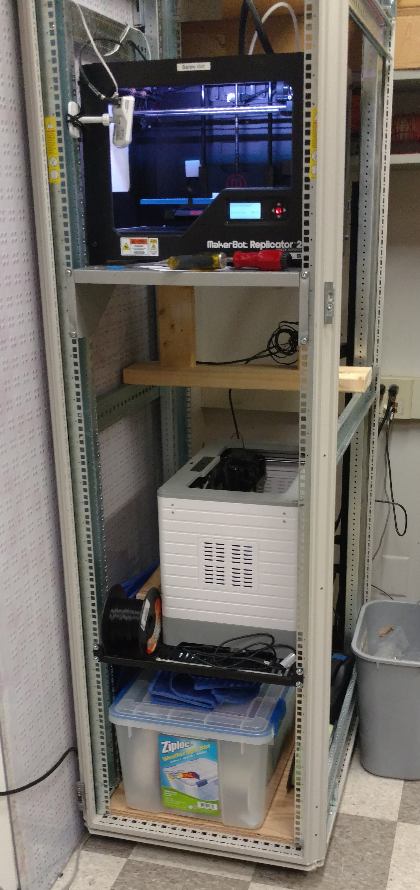
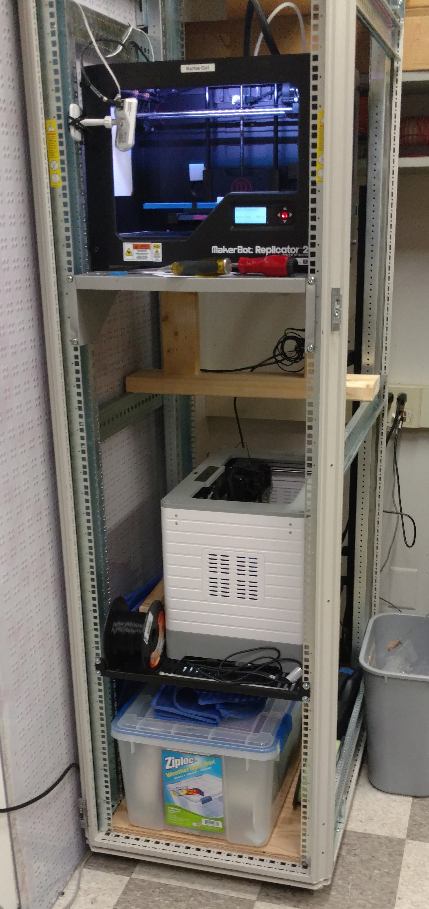
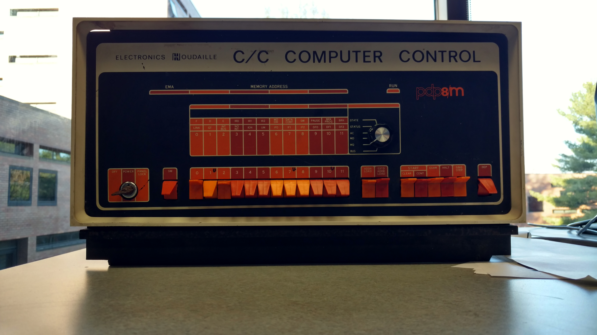

Current Projects at RIT and Computer Science House
This page is a list of the projects I am currently working on in my time at RIT and CSH. Please check back often to see updates and progress!
Robotics Projects
To see my robotics projects I have done in my time at RIT, please visit my robotics projects page.
Computer Vision Projects
To see my computer vision projects from my time at RIT and before, please visit my computer vision projects page.
3D Printing Projects
In my third year of RIT, I became very interested in 3D printers. In the spring of 2016, the Research and Development director at CSH appointed me to be a 3D Printer admin. My responsibilities include fixing the printers, keeping filament in the machines and helping members print models for projects. At the start of the 2016-2017 school year I "racked" CSH's 3D printers on some old server racks.
 

I even installed a 1-U barebones server at the top of the rack to allow people to print remotely.
I also installed two IP cameras which allow members to moniter their prints when they cannot
be present in the research room.
Future plans include building our large print area 3D printer
and makeing a spooling system for the Filibot. Both of these items were kindly donated to CSH from our
generous alumni during CSH's 40th anniversary weekend in Spring 2016.
PDP-8m Restoration Project
More to come soon!
